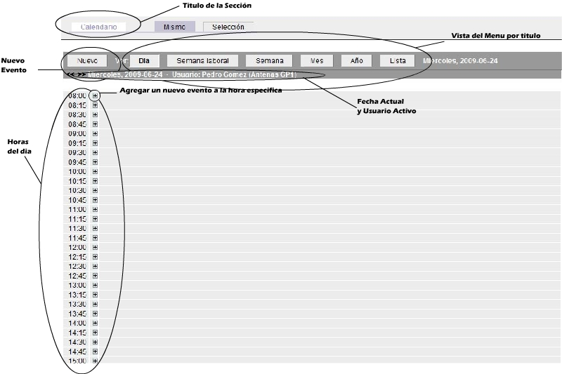
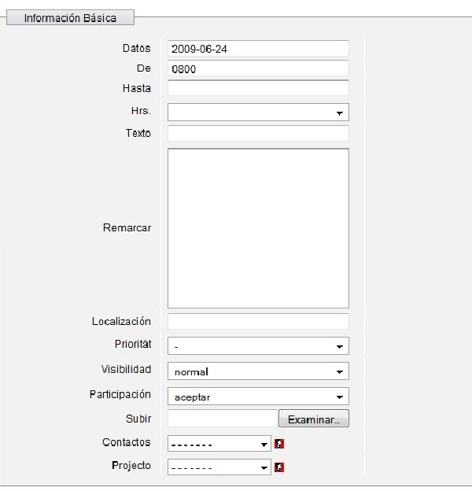
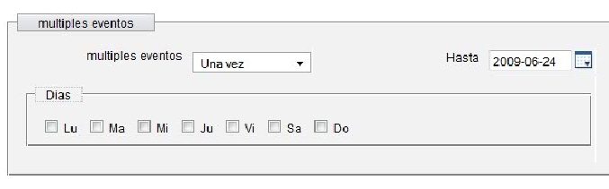
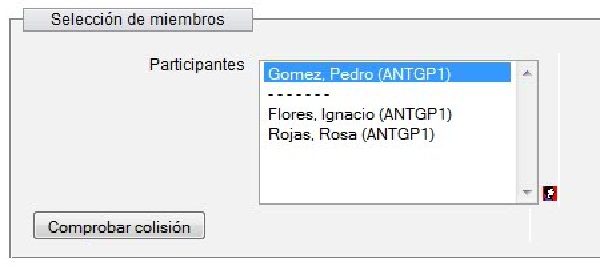

Calendario (Calendar)En el modulo de Calendario nos da una vista de las actividades para el dia para la semana o para el mes o en su defecto del año. Para cambiar de vista falto solo con dar click en la zona de vista del menu. En caso de agregar un evento se puede dar en nuevo o en el signo de más en la hora o tiempo deseado, se mostraran los pasos de como agregar un nuevo evento debajo de la imagén. Agregando un Evento. Al darle click en nuevo o en el signo (+) nos aparece la siguiente ventana.  En Datos nos pide el dia del evento el formato es año mes dia de la forma aaaa-mm-dd En la siguiente venta irian los Siguientes datos  Nos da la opción de repetir el evento, ya sea sellecionando los dias o un evento multiple y una fecha maxima de repetición. En la sección de mail se omite. Despues en caso de que haya sido privado se toma en cuenta la siguiente ventana.  Selecionamos lo miembros que participan en el evento, y se da click en colisión para verificar so no hay algun otro evento que choque con el actual. Se da en Ok para guardar el evento y regresar a la vista del evento. |